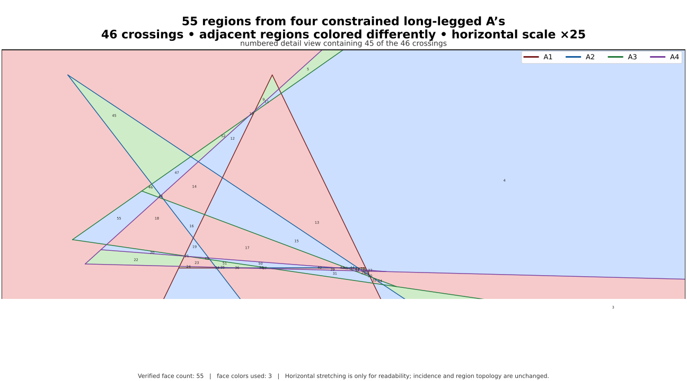

The exact region formula for constrained long-legged A arrangements
Siddhartha MahajanResearch Fellow, Lossfunk
Paras ChopraLossfunk
A constrained long-legged A is made from two rays with a common apex and
a crossbar joining points at equal distance from that apex. We determine
the maximum number of regions cut from the plane by n such
objects, for every n.
The all-n construction is split into a narrow family and a
wide nested fan. Its incidences become elementary line intersections
in two limiting coordinate charts.
01 · model
The problem and the region identity
A constrained A
For an angle φ, write e(φ)=(cos φ,sin φ).
Given an apex P∈ℝ², a radius
r>0, and distinct unit vectors
u,v, define
The first two pieces are the legs; the last is the crossbar. Equal
leg lengths are a metric constraint, so arbitrary affine
deformations do not preserve the problem.
Generic arrangement
A cross-shape intersection is proper when it lies strictly
beyond every participating ray apex and strictly inside every
participating crossbar. An arrangement is generic when supporting
lines from different A's are nonparallel, all actual intersections
are proper, no vertex lies on a foreign component, and no three
shapes meet at one point.
Regions are crossings plus a fixed contribution
Proposition
F = I + 2n + 1.
Here I is the number of finite proper crossings and
F is the number of complementary regions.
To prove it, compactify the plane by one point at infinity. A single
A becomes a connected graph with four vertices (apex, two bar
endpoints, infinity) and five edges, hence first Betti number two.
The union of n disjoint A's, with their infinity points
identified, has first Betti number 2n.
Every proper transverse crossing identifies two interior arc points
and increases the first Betti number by one. The compactified union
therefore has Betti number 2n+I, and
Euler's formula on the sphere gives
F=(2n+I)+1.
02 · extremal graph
The universal upper bound
Cutler, Karlsson, and Sloane proved two local facts: two constrained
long-legged A's have at most eight proper finite intersections, and
no three A's can be pairwise eight-crossing.
Form a graph G₈ with one vertex per A and
an edge exactly when the pair has eight crossings. The three-object
obstruction says that G₈ is triangle-free.
If it has e edges, then every edge contributes at most eight
crossings and every nonedge at most seven:
I ≤ 8e + 7(C(n,2) − e)
= 7C(n,2) + e.
Mantel's theorem gives e≤⌊n²/4⌋. Combining
this with the region identity yields
a(n) ≤ 7C(n,2) + ⌊n²/4⌋ + 2n + 1.
Equality is rigid: the eight-crossing graph must be the balanced
complete bipartite graph
K⌊n/2⌋,⌈n/2⌉, and every pair
within a part must have seven crossings. The lower construction now
has a precise target.
03 · lower construction
A narrow family and a wide nested fan
Fix part sizes p,q≥1, put
m=max(p,q), and choose a sufficiently small
ε>0. The construction uses
O=(0,0),
C=(1,0), and
h=3/2.
Ni
The narrow family
For 1≤i≤p, set
ai=3i, αi=aiε,ri=cos αi,Pi=C−rie(αi).
Its leg directions are
di±=e(αi±ε).
Center the bar as
ni=e(αi+π/2),Mi=C−ri(1−cos ε)e(αi),si=risin ε.
Then
Bi={Mi+tni:−si≤t≤si}
and its supporting line is
e(αi)·X=cos αi cos ε.
Wj
The wide family
For 1≤j≤q, set
qj=4−j, θj=2 arctan qj,Dj=4j, Lj=4m+j,λj=Ljε.
The low and high directions are
ℓj=e(λj) and
uj=e(π−θj+λj).
Put the high bar endpoint at
Hj=C+ε(−Dj,h), then define
Left: the chart near C, where narrow legs/bar and the wide
high-leg/bar fan become lines. Right: the chart near
y=−1, where the wide low legs are ordered.
The picture is schematic; the proof uses only strict slope and
order inequalities.
The three required incidence masks
Order each shape's components as first leg, second leg, crossbar.
A 1 means that the indicated proper component intersection is
required; a 0 makes no assertion.
N–N · 7110 110 111
N–W · 8111 111 011
W–W · 7111 011 011
04 · incidence verification
Why the three pair types work
Blow-up stability
If, after an invertible affine rescaling, two supporting lines and
their directed component domains converge to nonparallel lines
meeting in the relative interior of both limiting domains, then
their original components intersect properly for all sufficiently
small positive ε. This follows because the two line-intersection
parameters are continuous rational functions and the limiting
domain inequalities are strict.
Narrow–narrow pairs: seven crossings
Take i<k, write
a=ai and
b=ak, so
b−a≥3. Under the blow-up
(x,y)↦(x,y/ε) near O, the
σ-leg of Ni tends to
Y = −a + (a+σ)x, x>0, σ∈{−1,+1}.
The σ-leg of Ni and τ-leg
of Nk meet at limiting
abscissa
x=(b−a)/(b−a+τ−σ)>0, because the
denominator is at least (b−a)−2≥1.
Hence all four leg–leg intersections are proper.
For the bar of Ni against
the τ-leg of Nk, put
A=aε, B=bε.
Writing the point as Mi+t ni,
direct line intersection gives
Since a=3i≥3, all four margins are
positive for small ε, so the earlier bar meets both later legs
strictly inside.
Finally every narrow bar line passes through
Xε=(cos ε,0). Its bar
coordinate is
sin(aε)(1−cos ε)=O(ε³), while the
half-length is si=ε+O(ε³).
Therefore two narrow bars meet in both interiors. Total:
4+2+1=7.
Narrow–wide pairs: eight crossings
Fix Ni,Wj, and
abbreviate
a=ai, L=Lj, D=Dj,
μ=tan θj=2qj/(1−qj²),
and ν=tan(θj/2)=qj.
The determinant between the wide low direction and the σ-leg of
the narrow A is
sin((L−a−σ)ε), and
L−a−σ≥(4m+1)−(3m+1)=m>0.
The two ray parameters satisfy
εrσ → 1/(L−a−σ),
εsσ → 1/(L−a−σ),
so both narrow legs meet the wide low leg properly.
For the other six incidences, use the chart
(X,Y)=((x−1)/ε,y/ε) at C.
The narrow legs tend to Y=±1 and the
narrow bar tends to X=0, −1<Y<1.
The wide high leg and bar tend to
Hj: Y−h = −μ(X+D),
Cj: Y−h = −ν(X+D), X>−D.
The line Y=σ meets the wide bar with
X+D=(h−σ)/ν>0, since
h=3/2>1. Thus both narrow legs meet
the wide bar in its interior. The wide high-ray apex escapes to
infinity opposite the ray, so both finite intersections with
the narrow legs lie inside the ray.
At X=0, the high leg and bar have
heights
h−Dμ=3/2−2/(1−qj²) and
h−Dν=1/2. Since
0<qj≤1/4, the first lies
in [−19/30,−1/2); both heights are
strictly between −1 and 1. The narrow bar therefore meets the
wide high leg and wide bar properly. Total:
2+6=8.
Wide–wide pairs: seven crossings
Let j<k and write
μr=2qr/(1−qr²),
νr=qr. Because
qk≤qj/4 and
qj≤1/4,
μj > νj > μk > νk > 0.
In the chart at C, every high leg or crossbar of
Wr limits to a line through
(−Dr,h) of slope
−s, with
s=μr or
νr. For a j-line of slope
−s and k-line of slope
−t, s>t.
With Δ=Dk−Dj>0,
their displacements past their high endpoints are
Uj = tΔ/(s−t) > 0,
Uk = sΔ/(s−t) > 0.
These strict positive displacements give all four high/bar
incidences: high–high, high–bar, bar–high, and bar–bar.
It remains to make the low leg of
Wj meet all three components
of Wk. In the chart
(x,Y)=(x,(y+1)/ε), the low leg of
Wr tends to
Y=Lr(x−Ar), x>Ar.
The k-th high leg tends locally to the half-line
x=Ak,Y>0; its bar tends
locally at the low endpoint to
x=Bk,Y>κk,
where
κk =
Lk/sin θk =
Lk(Dk+qk)/2.
Since Aj<Ak<Bk,
the low j-leg hits the high k-leg forward. For the bar hit,
Dj≤Dk/4 and
Lk/Lj<5/4 give
Bk−Aj ≥ 7Dk/8,
κk/Lj
< (5/4)(257/256)(Dk/2)
< 7Dk/8.
Hence the low j-leg hits inside the k-bar. Finally the two low
limiting lines meet at
x* =
Ak +
Lj(Ak−Aj)/
(Lk−Lj)
> Ak > Aj,
so the low–low crossing is forward on both rays. These three low
incidences plus the four high/bar incidences give
7.
05 · general position
Generic rational perturbation
The transparent base construction has intentional degeneracies; for
example all narrow crossbar supporting lines concur at
(cos ε,0). This is removed without losing
any required crossing.
Choose ε small enough that all strict component-domain inequalities
above hold simultaneously. They define an open neighborhood
U in the parameter space of apices, radii,
and leg directions. Use the rational chart for each unit direction
t ↦ ((1−t²)/(1+t²), 2t/(1+t²)).
After clearing denominators, every unwanted degeneracy—support-line
parallelism, a foreign component through an apex or bar endpoint, or
coincidence of two distinctly labelled finite crossings—is contained
in the zero set of a polynomial in the rational chart parameters.
Only finitely many labels occur. None of these polynomials vanishes
identically on U, because a sufficiently
small independent change of one participating apex, radius, or
direction breaks the event. The bad locus is therefore a finite union
of proper algebraic zero sets and has empty interior.
Rational points are dense in the chart, so
U contains a rational point outside every
bad set. This gives a generic rational arrangement with all strict
required incidences preserved.
Completion
Take p=⌊n/2⌋ and
q=⌈n/2⌉. There are
pq=⌊n²/4⌋ cross-family pairs with eight
crossings and all remaining pairs have seven. Thus
I ≥ 8pq + 7(C(p,2)+C(q,2))
= 7C(n,2) + ⌊n²/4⌋.
The upper bound gives equality, and
F=I+2n+1 proves the theorem.
Every bipartition is realizable
The same argument works for arbitrary
p,q≥1: there is a generic rational
arrangement with eight crossings on every cross-family pair and
exactly seven on every same-family pair. The exact region count is
Four A's need 46 globally distinct proper crossings:
four cross-part pairs contribute eight each and two within-part pairs
contribute seven each. The region identity then gives
46+2·4+1=55.
The full exact rational witness from n04.json. Horizontal
scale is enlarged to separate its extremely compressed geometry.
The colors distinguish the four A's and the face coloring makes the
55 complementary regions visible.

Numbered detail of the same certificate. This view contains 45 of
the 46 crossings; the region labels let the dense local structure be
inspected rather than inferred from a compressed overview.
A low-height rational companion
A later rational simplification found a second witness with small,
human-readable fractions. It proves the same
7/8 crossing pattern, but it is not the
coordinate set used in the two primary figures above.
The low-height certificate in three affine views: the full
arrangement, the main 43-crossing cluster, and a 30-crossing core.
The anisotropic display transform only improves visibility; all
intersection predicates are verified in the original Euclidean
coordinates.
07 · exact finite checks
Rational certificates from n=4 through n=16
These thirteen files are independent reproducibility checks, not
premises of the all-n proof. Every coordinate and direction
parameter is rational. The verifier uses only Python's standard
library and fractions.Fraction; it does not make
floating-point or visual decisions.
What “exact” means here.
The finite certificates can be checked mechanically without human
geometric judgment: every sign, equality, and distinctness test is
performed in rational arithmetic. The analytic all-n theorem
is a mathematical proof and remains appropriate for ordinary expert
review.
equal positive leg lengths, positive orientation, and positive radius for every A;
all nine component-pair predicates for every pair, with strict ray and crossbar domains;
the balanced seven/eight pair-crossing matrix;
absence of cross-shape support-line parallelism;
absence of every foreign apex or crossbar-endpoint incidence; and
global distinctness of all proper rational crossings.
08 · research provenance
How the proof was reached
The path was a sequence of exact computational discoveries followed
by an analytic compression. This record is included to make the
model-assisted provenance explicit.
Stage 1
The n=4 breakthrough
The 55-region discovery and its first proof were developed in
the ChatGPT web UI with GPT-5.6 sol pro. This
produced the complicated rational witness shown above and the
exact target pattern: four 8-crossing pairs and two 7-crossing
pairs.
Stage 2
Exact certificates through n=16
Local Codex running GPT-5.6 sol xhigh, using
the n=4 manuscript as its starting point, generated and checked
rational equality certificates for every n from 5 through 16.
Those experiments made the balanced complete bipartite
8-crossing graph impossible to miss.
Stage 3
The all-n construction
A zip containing the certificates, proof directions, and
discovery artifacts was supplied to the ChatGPT web UI running
GPT-5.6 sol pro. It found the narrow/wide
parametric construction, converted the finite pattern into the
all-n analytic proof on this page, and closed the sequence.
Stage 4
Independent local audit
Local Codex audited the proof, including an exact symbolic
expansion of the endpoint-sensitive narrow–narrow calculation,
an independent rational verifier for the finite certificates,
and regression checks of the parametric base through balanced
size 64. The models also assisted in preparing the manuscript
and this HTML presentation.
Separation of roles.
The certificates establish finite arrangements by exact arithmetic.
The theorem for every n is established by the upper-bound argument,
the explicit two-family construction, and the generic rational
perturbation. Neither claim asks the reader to trust a plotted image
or a floating-point optimizer.
09 · reproducibility
Paper, source, scripts, and archived outputs
Paper
Publication manuscript
The complete research-paper version of the proof and certificate appendix.
Python 3.10 or later is recommended. No third-party package is used.
10 · sources
References
David O. H. Cutler, Jonas Karlsson, and Neil J. A. Sloane,
Cutting a Pancake with an Exotic Knife,
arXiv:2511.15864. The two-object maximum and the obstruction to
three pairwise eight-crossing A's are the local upper-bound inputs.
OEIS Foundation Inc.,
A397182,
“maximum number of regions formed by n constrained long-legged
A's.”
Willem Mantel, “Problem 28,” Wiskundige Opgaven 10
(1907), 60–61.